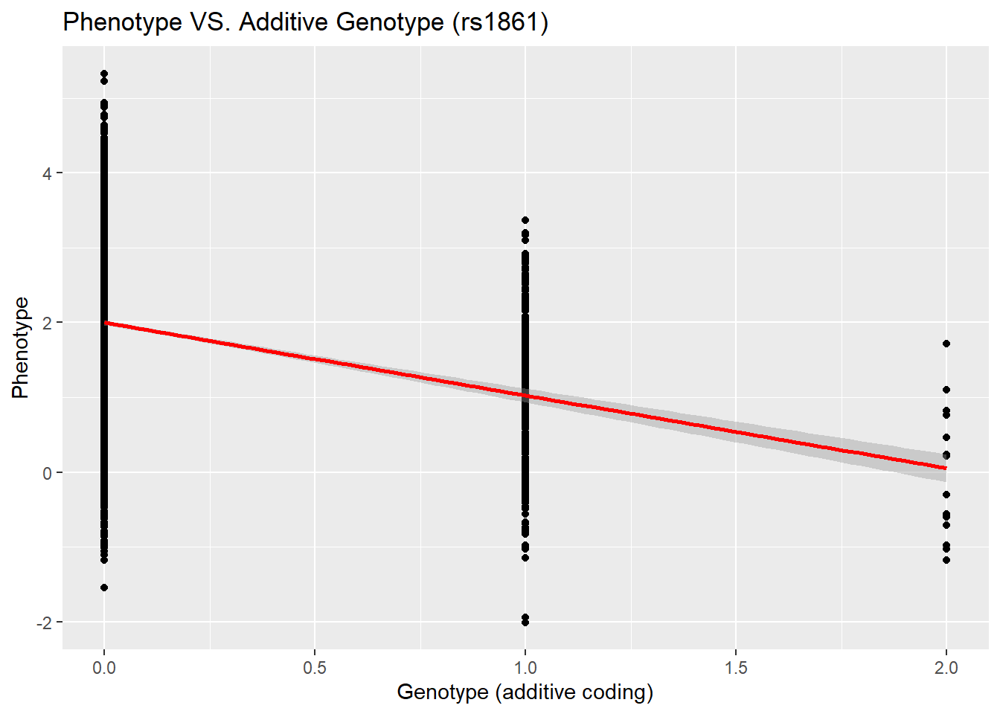
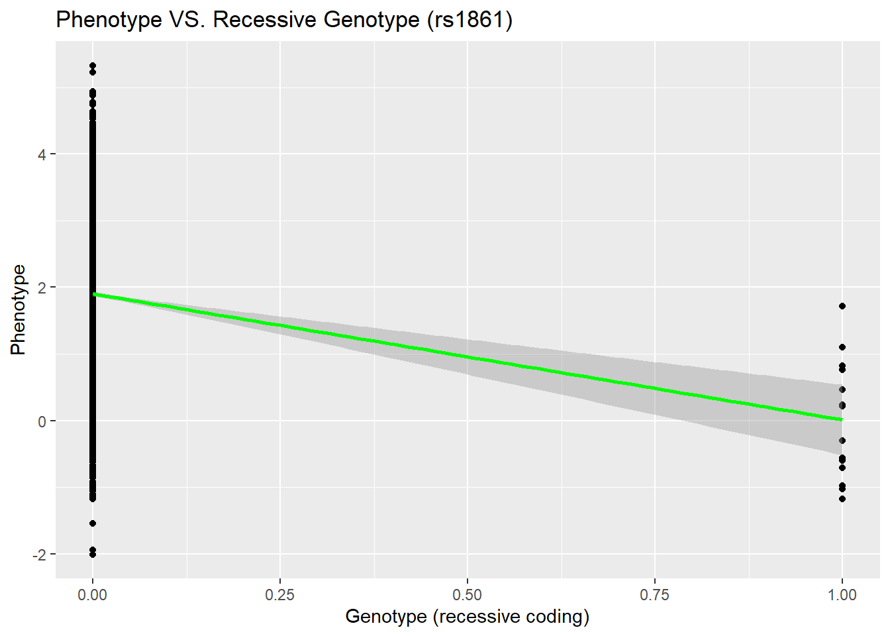

library(data.table)
library(ggplot2)
library(seqminer)
library(HardyWeinberg)
library(dplyr)
library(languageserver)
library(beepr)Assignment #1
Assignment 1
You only need to write lines of code for each question. When answering questions that ask you to identify or interpret something, the length of your response doesn’t matter. For example, if the answer is just ‘yes,’ ‘no,’ or a number, you can just give that answer without adding anything else.
We will go through comparable code and concepts in the live learning session. If you run into trouble, start by using the help help() function in R, to get information about the datasets and function in question. The internet is also a great resource when coding (though note that no outside searches are required by the assignment!). If you do incorporate code from the internet, please cite the source within your code (providing a URL is sufficient).
Please bring questions that you cannot work out on your own to office hours, work periods or share with your peers on Slack. We will work with you through the issue.
You will need to install PLINK and run the analyses. Please follow the OS-specific setup guide in SETUP.md. PLINK is a free, open-source whole genome association analysis toolset, designed to perform a range of basic, large-scale analyses in a computationally efficient manner.
Question 1: Data inspection
Before fitting any models, it is essential to understand the data. Use R or bash code to answer the following questions about the gwa.qc.A1.fam, gwa.qc.A1.bim, and gwa.qc.A1.bed files, available at the following Google Drive link: https://drive.google.com/drive/folders/11meVqGCY5yAyI1fh-fAlMEXQt0VmRGuz?usp=drive_link. Please download all three files from this link and place them in 02_activities/data/.
I completed this on R studio because VS Code was giving me many persistent and memory-devouring errors with R. They got so severe that I had to restart my computer several times before I decided to switch to R studio
Setting up a consistent path for all chunks of code and loading needed R packages
- Read the .fam file. How many samples does the dataset contain?
fam_all <- fread("02_activities/data/gwa.qc.A1.fam")
N <- nrow(fam_all)
N[1] 4000- What is the ‘variable type’ of the response variable (i.e.Continuous or binary)?
class(fam_all$V6)#[1] "numeric"print("numeric - continuous")[1] "numeric - continuous"- Read the .bim file. How many SNPs does the dataset contain?
bim_all<- fread(paste0('02_activities/data/gwa.qc.A1.bim'))
M <- nrow(bim_all);M[1] 101083Question 2: Allele Frequency Estimation
- Load the genotype matrix for SNPs rs1861, rs3813199, rs3128342, and rs11804831 using additive coding. What are the allele frequencies (AFs) for these four SNPs?
indx.SNP=which((bim_all$V2)%in%c('rs1861','rs3813199','rs3128342','rs11804831'))
geno_mat<- readPlinkToMatrixByIndex('02_activities/data/gwa.qc.A1', 1:N, indx.SNP)
geno_mat[geno_mat==-9]<- NA
colnames(geno_mat)<- bim_all$V2[indx.SNP]
allele_freq <- apply(geno_mat, 2, function(x) {
sum(x, na.rm = TRUE) / (2 * sum(!is.na(x)))
})
allele_freq rs3813199 rs11804831 rs3128342 rs1861
0.9430874 0.8456588 0.6948789 0.9460141 beep(3)- What are the minor allele frequencies (MAFs) for these four SNPs?
minor_allelefreqs <- ifelse(allele_freq > 0.5, 1 - allele_freq, allele_freq)
minor_allelefreqs rs3813199 rs11804831 rs3128342 rs1861
0.05691262 0.15434124 0.30512109 0.05398587 Question 3: Hardy–Weinberg Equilibrium (HWE) Test
- Conduct the Hardy–Weinberg Equilibrium (HWE) test for all SNPs in the .bim file. Then, load the file containing the HWE p-value results and display the first few rows of the resulting data frame.
plink2 --bfile ./02_activities/data/gwa.qc.A1 --hardy --out ./02_activities/data/gwa_qc_hwe- What are the HWE p-values for SNPs rs1861, rs3813199, rs3128342, and rs11804831?
A1hwe <- fread("02_activities/data/gwa_qc_hwe.hardy")
A1hwe$P[A1hwe$ID%in%c('rs1861','rs3813199','rs3128342','rs11804831')][1] 1.000000 0.113354 0.330273 0.274719Question 4: Genetic Association Test
- Conduct a linear regression to test the association between SNP rs1861 and the phenotype. What is the p-value?
indx.SNP1=which((bim_all$V2)%in%'rs1861')
geno_SNP<- readPlinkToMatrixByIndex('02_activities/data/gwa.qc.A1', 1:N, indx.SNP1)
geno_SNP[geno_SNP==-9]=NA
geno_subset=as.data.frame(cbind(fam_all$V6,geno_SNP))
geno_subset=na.omit(geno_subset)
colnames(geno_subset)=c('Phenotype','Genotype')
AF = mean(geno_subset$Genotype) / 2
if(AF>0.5){
geno_subset$Genotype <- 2 - geno_subset$Genotype
}
model <- lm(Phenotype ~ Genotype, data = geno_subset)
summary(model)
Call:
lm(formula = Phenotype ~ Genotype, data = geno_subset)
Residuals:
Min 1Q Median 3Q Max
-3.5439 -0.6850 0.0021 0.6993 3.3268
Coefficients:
Estimate Std. Error t value Pr(>|t|)
(Intercept) 2.00003 0.01680 119.0 <2e-16 ***
Genotype -0.97382 0.04943 -19.7 <2e-16 ***
---
Signif. codes: 0 '***' 0.001 '**' 0.01 '*' 0.05 '.' 0.1 ' ' 1
Residual standard error: 1.003 on 3962 degrees of freedom
Multiple R-squared: 0.08924, Adjusted R-squared: 0.08901
F-statistic: 388.2 on 1 and 3962 DF, p-value: < 2.2e-16print('The p-value is <2.2e-16')[1] "The p-value is <2.2e-16"- How would you interpret the beta coefficient from this regression?
Under additive coding, the beta coefficient represents the estimated change in the phenotype for each additional copy of the minor allele A of SNP rs1861. Here, a negative beta value suggests that minor allele A is associated with decreased phenotypic values.- Plot the scatterplot of phenotype versus the genotype of SNP rs1861. Add the regression line to the plot.
ggplot(geno_subset, aes(x=Genotype, y=Phenotype)) +
geom_point() +
geom_smooth(method="lm", se=TRUE, color="red") +
labs(title="Phenotype VS. Additive Genotype (rs1861)",
x="Genotype (additive coding)",
y="Phenotype")
The phenotype appears to be negatively associated with the genotype of SNP rs1861, as the regression line slopes downward.
- Convert the genotype coding for rs1861 to recessive coding.
geno_subset$Genotype <- ifelse(geno_subset$Genotype == 2, 1, 0)
geno_subset$Genotype [1] 0 0 0 0 0 0 0 0 0 0 0 0 0 0 0 0 0 0 0 0 0 0 0 0 0 0 0 0 0 0 0 0 0 0 0 0 0
[38] 0 0 0 0 0 0 0 0 0 1 0 0 0 0 0 0 0 0 0 0 0 0 0 0 0 0 0 0 0 0 0 0 0 0 0 0 0
[75] 0 0 0 0 0 0 0 0 0 0 0 0 0 0 0 0 0 0 0 0 0 0 0 0 0 0 0 0 0 0 0 0 0 0 0 0 0
[112] 0 0 0 0 0 0 0 0 0 0 0 0 0 0 0 0 0 0 0 0 0 0 0 0 0 0 0 0 0 0 0 0 0 0 0 0 0
[149] 0 0 0 0 0 0 0 0 0 0 0 0 0 0 0 0 0 0 0 0 0 0 0 0 1 0 0 0 0 0 0 0 0 0 0 0 0
[186] 0 0 0 0 0 0 0 0 0 0 0 0 0 0 0 0 0 0 0 0 0 0 0 0 0 1 0 0 0 0 0 0 0 0 0 0 0
[223] 0 0 0 0 0 0 0 0 0 0 0 0 0 0 0 0 0 0 0 0 0 0 0 0 0 0 0 0 0 0 0 0 0 0 0 0 0
[260] 0 0 0 0 0 0 0 0 0 0 0 0 0 0 0 0 0 0 0 0 0 0 0 0 0 0 0 0 0 0 0 0 0 0 0 0 0
[297] 0 0 0 0 0 0 0 0 0 0 0 0 0 0 0 0 0 0 0 0 0 0 0 0 0 0 0 0 0 0 0 0 0 0 0 0 0
[334] 0 0 0 0 0 0 0 0 0 0 0 0 0 0 0 0 0 0 0 0 0 0 0 0 0 0 0 0 0 0 0 0 0 0 0 0 0
[371] 0 0 0 0 0 0 0 0 0 0 0 0 0 0 0 0 0 0 0 0 0 0 0 0 0 0 0 0 0 0 0 0 0 0 0 0 0
[408] 0 0 0 0 0 0 0 0 0 0 0 0 0 0 0 0 0 0 0 0 0 0 0 0 0 0 0 0 0 0 0 0 0 0 0 0 0
[445] 0 0 0 0 0 0 0 0 0 0 0 0 0 0 0 0 0 0 0 0 0 1 0 0 0 0 0 0 0 0 0 0 0 0 0 0 0
[482] 0 0 0 0 0 0 0 0 0 0 0 0 0 0 0 0 0 0 0 0 0 0 0 0 0 0 0 0 0 0 0 0 0 0 0 0 0
[519] 0 0 0 0 0 0 0 0 0 0 0 0 0 0 0 0 0 0 0 0 0 0 0 0 0 0 0 0 0 0 0 0 0 0 0 0 0
[556] 0 0 0 0 0 0 0 0 0 0 0 0 0 0 0 0 0 0 0 0 0 0 0 0 0 0 0 0 0 0 0 0 0 0 0 0 0
[593] 0 0 0 0 0 0 0 0 0 0 0 0 0 0 0 0 0 0 0 0 0 0 0 0 0 0 0 0 0 0 0 0 0 0 0 0 0
[630] 0 0 0 0 0 0 0 0 0 0 0 0 0 0 0 0 0 0 0 0 0 0 0 0 0 0 0 0 0 0 0 0 0 0 0 0 0
[667] 0 0 0 0 0 0 0 0 0 0 0 0 0 0 0 0 0 0 0 0 0 0 0 0 0 0 0 0 0 0 0 0 0 0 0 0 0
[704] 0 0 0 0 0 0 0 0 0 0 0 0 0 0 0 0 0 0 0 0 0 0 0 0 0 0 0 0 0 0 0 0 0 0 0 0 0
[741] 0 0 0 0 0 0 0 0 0 0 0 0 0 0 0 0 0 0 0 0 0 0 0 0 0 0 0 0 0 0 0 0 0 0 0 0 0
[778] 0 0 0 0 0 0 0 0 0 0 0 0 0 0 0 0 0 0 0 0 0 0 0 0 0 0 0 0 0 0 0 0 0 0 0 0 0
[815] 0 0 0 0 0 0 0 0 0 0 0 0 0 0 0 0 0 0 0 0 0 0 0 0 0 0 0 0 0 0 0 0 0 0 0 0 0
[852] 0 0 0 0 0 0 0 0 0 0 0 0 0 0 0 0 0 0 0 0 0 0 0 0 0 0 0 0 0 0 0 0 0 0 0 0 0
[889] 0 0 0 0 0 0 0 0 0 0 0 0 0 0 0 0 0 0 0 0 0 0 0 0 0 0 0 0 0 0 0 0 0 0 0 0 0
[926] 0 0 0 0 0 0 0 0 0 0 0 0 0 0 0 0 0 0 0 0 0 0 0 0 0 0 0 0 0 0 0 0 0 0 0 0 0
[963] 0 0 0 0 0 0 0 0 0 0 0 0 0 0 0 0 0 0 0 0 0 0 0 0 0 0 0 0 0 0 0 0 0 0 0 0 0
[1000] 0 0 0 0 0 0 0 0 0 0 0 0 0 0 0 0 0 0 0 0 0 0 0 0 0 0 0 0 0 0 0 0 0 0 0 0 0
[1037] 0 0 0 0 0 0 0 0 0 0 0 0 0 0 0 0 0 0 0 0 0 0 0 0 0 0 0 0 0 0 0 0 0 0 0 0 0
[1074] 0 0 0 0 0 0 0 0 0 0 0 0 0 0 0 0 0 0 0 0 0 0 0 0 0 0 0 0 0 0 0 0 0 0 0 0 0
[1111] 0 0 0 0 0 0 0 0 0 0 0 0 0 0 0 0 0 0 0 0 0 0 0 0 0 0 0 0 0 0 0 0 0 0 0 0 0
[1148] 0 0 0 0 0 0 0 0 0 0 0 0 0 0 0 0 0 0 0 0 0 0 0 0 0 0 0 0 0 0 0 0 0 0 0 0 0
[1185] 0 0 0 0 0 0 0 0 0 0 0 0 0 0 0 0 0 0 0 0 0 0 0 0 0 0 0 0 0 0 0 0 0 0 0 0 0
[1222] 0 0 0 0 0 0 0 0 0 0 0 0 0 0 0 0 0 0 0 0 0 0 0 0 0 0 0 0 0 0 0 0 0 0 0 0 0
[1259] 0 0 0 0 0 0 1 0 0 0 0 0 0 0 0 0 0 0 0 0 0 0 0 0 0 0 0 0 0 0 0 0 0 0 0 0 0
[1296] 0 0 0 0 0 0 0 0 0 0 0 0 0 0 0 0 0 0 0 0 0 0 0 0 0 0 0 0 0 0 0 0 0 0 0 0 0
[1333] 0 0 0 0 0 0 0 0 0 0 0 0 0 0 0 0 0 0 0 0 0 0 0 0 0 0 0 0 0 0 0 0 0 0 0 0 0
[1370] 0 0 0 0 0 0 0 0 0 0 0 0 0 1 0 0 0 0 0 0 0 0 0 0 0 0 0 0 0 0 0 0 0 0 0 0 0
[1407] 0 0 0 0 0 0 0 0 0 0 0 0 0 0 0 0 0 0 0 0 0 0 0 0 0 0 0 0 0 0 0 0 0 0 0 0 0
[1444] 0 0 0 0 0 0 0 0 0 0 0 0 0 0 0 0 0 0 0 0 0 0 0 0 0 0 0 0 0 0 0 0 0 0 0 0 0
[1481] 0 0 0 0 0 0 0 0 0 0 0 0 0 0 0 0 0 0 0 0 0 0 0 0 0 0 0 0 0 0 0 0 0 0 0 0 0
[1518] 0 0 0 0 0 0 0 0 0 0 0 0 0 0 0 0 0 0 0 0 0 0 0 0 0 0 0 0 0 0 0 0 0 0 0 0 0
[1555] 0 0 0 0 0 0 0 0 0 0 0 0 0 0 0 0 0 0 0 0 0 0 0 0 0 0 0 0 0 0 0 0 0 0 0 0 0
[1592] 0 0 0 0 0 0 0 0 0 0 0 0 0 0 0 0 0 1 0 0 0 0 0 0 0 0 0 0 0 0 0 0 0 0 0 0 0
[1629] 0 0 0 0 0 0 0 0 0 0 0 0 0 0 0 0 0 0 0 0 0 0 0 0 0 0 0 0 0 0 0 0 0 0 0 0 0
[1666] 0 0 0 0 0 0 0 0 0 0 1 0 0 0 0 0 0 0 0 0 0 0 0 0 0 0 0 0 0 0 0 0 0 0 0 0 0
[1703] 0 0 0 0 0 0 0 0 0 0 0 0 0 0 0 0 0 0 0 0 0 0 0 0 0 1 0 0 0 0 0 0 0 0 0 0 0
[1740] 0 0 0 0 0 0 0 0 0 0 0 0 0 0 0 0 0 0 0 0 0 0 0 0 0 0 0 0 0 0 0 0 0 0 0 0 0
[1777] 0 0 0 0 0 0 0 0 0 0 0 0 0 0 0 0 0 0 0 0 0 0 0 0 0 0 0 0 0 0 0 0 0 0 0 0 0
[1814] 0 0 0 0 0 0 0 0 0 0 0 0 0 0 0 0 0 0 0 0 0 0 0 0 0 0 0 0 0 0 0 0 0 0 0 0 0
[1851] 0 0 0 0 0 0 0 0 0 0 0 0 0 0 0 0 0 0 0 0 0 0 0 0 0 0 0 0 0 0 0 0 0 0 0 0 0
[1888] 0 0 0 0 0 0 0 0 0 0 0 0 0 0 0 0 0 0 0 0 0 0 0 0 0 0 0 0 0 0 0 0 0 0 0 0 0
[1925] 0 0 0 0 0 0 0 0 0 0 0 0 0 0 0 0 0 0 0 0 0 0 0 0 0 0 0 0 0 0 0 0 0 0 0 0 0
[1962] 0 0 0 0 0 0 0 0 0 0 0 0 0 0 0 0 0 0 0 0 0 0 0 0 0 0 0 0 0 0 0 0 0 0 0 0 0
[1999] 0 0 0 0 0 0 0 0 0 0 0 0 0 0 0 0 0 0 0 0 0 0 0 0 0 0 0 0 0 0 0 0 0 0 0 0 0
[2036] 0 0 0 0 0 0 0 0 0 0 0 0 0 0 0 0 0 0 0 0 0 0 0 0 0 0 0 0 0 0 0 0 0 0 0 0 0
[2073] 0 0 0 0 0 0 0 0 0 0 0 0 0 0 0 0 0 0 0 0 0 0 0 0 0 0 0 0 0 0 0 0 0 0 0 0 0
[2110] 0 0 0 0 0 0 0 0 0 0 0 0 0 0 0 0 0 0 0 0 0 0 0 0 0 0 0 0 0 0 0 0 0 0 0 0 0
[2147] 0 0 0 0 0 0 0 0 0 0 0 0 0 0 0 0 0 0 0 0 0 0 0 0 0 0 0 0 0 0 0 0 0 0 0 0 0
[2184] 0 0 0 0 0 0 0 0 0 0 0 0 0 0 0 0 0 0 0 0 0 0 0 0 0 0 0 0 0 0 0 0 0 0 0 0 0
[2221] 0 0 0 0 0 0 0 0 0 0 0 0 0 0 0 0 0 0 0 0 0 0 0 0 0 0 0 0 0 0 0 0 0 0 0 0 0
[2258] 0 0 0 0 0 0 0 0 0 0 0 0 0 0 0 0 0 0 0 0 0 0 0 0 0 0 0 0 0 0 0 0 0 0 0 0 0
[2295] 0 0 0 0 0 0 0 0 0 0 0 0 0 0 0 0 0 0 0 0 0 0 0 0 0 0 0 0 0 0 0 0 0 0 0 0 0
[2332] 0 0 0 0 0 0 0 0 0 0 0 0 0 0 1 0 0 0 0 0 0 0 0 0 0 0 0 0 0 0 0 0 0 0 0 0 0
[2369] 0 0 0 0 0 0 0 0 0 0 0 0 0 0 0 0 0 0 0 0 0 0 0 0 0 0 0 0 0 0 0 0 0 0 0 0 0
[2406] 0 0 0 0 0 0 0 0 0 0 0 0 0 0 0 0 0 0 0 0 0 0 0 0 0 0 0 0 0 0 0 0 0 0 0 0 0
[2443] 0 0 0 1 0 0 0 0 0 0 0 0 0 0 0 0 0 0 0 0 0 0 0 0 0 0 0 0 0 0 0 0 0 0 0 0 0
[2480] 0 0 0 0 0 0 0 0 0 0 0 0 0 0 0 0 0 0 0 0 0 0 0 0 0 0 0 0 0 0 0 0 0 0 0 0 0
[2517] 0 0 0 0 0 0 0 0 0 0 0 0 0 0 0 0 0 0 0 0 0 0 0 0 0 0 0 0 0 0 0 0 0 0 0 0 0
[2554] 0 0 0 0 0 0 0 0 0 0 0 0 0 0 0 0 0 0 0 0 0 0 0 0 0 0 0 0 0 0 0 0 0 0 0 0 0
[2591] 0 0 0 0 0 0 0 0 0 0 0 0 0 0 0 0 0 0 0 0 0 0 0 0 0 0 0 0 0 0 0 0 0 0 0 0 0
[2628] 0 0 0 0 0 1 0 0 0 0 0 0 0 0 0 0 0 0 0 0 0 0 0 0 0 0 0 0 0 0 0 0 0 0 0 0 0
[2665] 0 0 0 0 0 0 0 0 0 0 0 0 0 0 0 0 0 0 0 0 0 0 0 0 0 0 0 0 0 0 0 0 0 0 0 0 0
[2702] 0 0 0 0 0 0 0 0 0 0 0 0 0 0 0 0 0 0 0 0 0 0 0 0 0 0 0 0 0 0 0 0 0 0 0 0 0
[2739] 0 0 0 0 0 0 0 0 0 0 0 0 0 0 0 0 0 0 0 0 0 0 0 0 0 0 0 0 0 0 0 0 0 0 0 0 0
[2776] 0 0 0 0 0 0 0 0 0 0 0 0 0 0 0 0 0 0 0 0 0 0 0 0 0 0 0 0 0 0 0 0 0 0 0 0 0
[2813] 0 0 0 0 0 0 0 0 0 0 0 0 0 0 0 0 0 0 0 0 0 0 0 0 0 0 0 0 0 0 0 0 0 0 0 0 0
[2850] 0 0 0 0 0 0 0 0 0 0 0 0 0 0 0 0 0 0 0 0 0 0 0 0 0 0 0 0 0 0 0 0 0 0 0 0 0
[2887] 0 0 0 0 0 0 0 0 0 0 0 0 0 0 0 0 0 0 0 0 0 0 0 0 0 0 0 0 0 0 0 0 0 0 0 0 0
[2924] 0 0 0 0 0 0 0 0 0 0 0 0 0 0 0 0 0 0 0 0 0 0 0 0 0 0 0 0 0 0 0 0 0 0 0 0 0
[2961] 0 0 0 0 0 0 0 0 0 0 0 0 0 0 0 0 0 0 0 0 0 0 0 0 0 0 0 0 0 0 0 0 0 0 0 0 0
[2998] 0 0 0 0 0 0 0 0 0 0 0 0 0 0 0 0 0 0 0 0 0 0 0 0 0 0 0 0 0 0 0 0 0 0 0 0 0
[3035] 0 0 0 0 0 0 0 0 0 0 0 0 0 0 0 0 0 0 0 0 0 0 0 0 0 0 0 0 0 0 0 0 0 0 0 0 0
[3072] 0 0 0 0 0 0 0 0 0 0 0 0 0 0 0 0 0 0 0 0 0 0 0 0 0 0 0 0 0 0 0 0 0 0 0 0 0
[3109] 0 0 0 0 0 0 0 0 0 0 0 0 0 0 0 0 0 0 0 0 0 0 0 0 0 0 0 0 0 0 0 0 0 0 0 0 0
[3146] 0 0 0 0 0 0 0 0 0 0 0 0 0 0 0 0 0 0 0 0 0 0 0 0 0 0 0 0 0 0 0 0 0 0 0 0 0
[3183] 0 0 0 0 0 0 0 0 0 0 0 0 0 0 0 0 0 0 0 0 0 0 0 0 0 0 0 0 0 0 0 0 0 0 0 0 0
[3220] 0 0 0 0 0 0 0 0 0 0 0 0 0 0 0 0 0 0 0 0 0 0 0 0 0 0 0 0 0 0 0 0 0 0 0 0 0
[3257] 0 0 0 0 0 0 0 0 0 0 0 0 0 0 0 0 0 0 0 0 0 0 0 0 0 0 0 0 0 0 0 0 0 0 0 0 0
[3294] 0 0 0 0 0 0 0 0 0 0 0 0 0 0 0 0 0 0 0 0 0 0 0 0 0 0 0 0 0 0 0 0 0 0 0 0 0
[3331] 0 0 0 0 0 0 0 0 0 0 0 0 0 0 0 0 0 0 0 0 0 0 0 0 0 0 0 0 0 0 0 0 0 0 0 0 0
[3368] 0 0 0 0 0 0 1 0 0 0 0 0 0 0 0 0 0 0 0 0 0 0 0 0 0 0 0 0 0 0 0 0 0 0 0 0 0
[3405] 0 0 0 0 0 0 0 0 0 0 0 0 0 0 0 0 0 0 0 0 0 0 0 0 0 0 0 0 0 0 0 0 0 0 0 0 0
[3442] 0 0 0 0 0 0 0 0 0 0 0 0 0 1 0 0 0 0 0 0 0 0 0 0 0 0 0 0 0 0 0 0 0 0 0 0 0
[3479] 0 0 0 0 0 0 0 0 0 0 0 0 0 0 0 0 0 0 0 0 0 0 0 0 0 0 0 0 0 0 0 0 0 0 0 0 0
[3516] 0 0 0 0 0 0 0 0 0 0 0 0 0 0 0 0 0 0 0 0 0 0 0 0 0 0 0 0 0 0 0 0 0 0 0 0 0
[3553] 0 0 0 0 0 0 0 0 0 0 0 0 0 0 0 0 0 0 0 0 0 0 0 0 0 0 0 0 0 0 0 0 0 0 0 0 0
[3590] 0 0 0 0 0 0 0 0 0 0 0 0 0 0 0 0 0 0 0 0 0 0 0 0 0 0 0 0 0 0 0 0 0 0 0 0 0
[3627] 0 0 0 0 0 0 0 0 0 0 0 0 0 0 0 0 0 0 0 0 0 0 0 0 0 0 0 0 0 0 0 0 0 0 0 0 0
[3664] 0 0 0 0 0 0 0 0 0 0 0 0 0 0 0 0 0 0 0 0 0 0 0 0 0 0 0 0 0 0 0 0 0 0 0 0 0
[3701] 0 0 0 0 0 0 0 0 0 0 0 0 0 0 0 0 0 0 0 0 0 0 0 0 0 0 0 0 0 0 0 0 0 0 0 0 0
[3738] 0 0 0 0 0 0 0 0 0 0 0 0 0 0 0 0 0 0 0 0 0 0 0 0 0 0 0 0 0 0 0 0 0 0 0 0 0
[3775] 0 0 0 0 0 0 0 0 0 0 0 0 0 0 0 0 0 0 0 0 0 0 0 0 0 0 0 0 0 0 0 0 0 0 0 0 0
[3812] 0 0 0 0 0 0 0 0 0 0 0 0 0 0 0 0 0 0 0 0 0 0 0 0 0 0 0 0 0 0 0 0 0 0 0 0 0
[3849] 0 0 0 0 0 0 0 0 0 0 0 0 0 0 0 1 0 0 0 0 0 0 0 0 0 0 0 0 0 0 0 0 0 0 0 0 0
[3886] 0 0 0 0 0 0 0 0 0 0 0 0 0 0 0 0 0 0 0 0 0 0 0 0 0 0 0 0 0 0 0 0 0 0 0 0 0
[3923] 0 0 0 0 0 0 0 0 0 0 0 0 0 0 0 0 0 0 0 0 0 0 0 0 0 0 0 0 0 0 0 0 0 0 0 0 0
[3960] 0 0 0 0 0- Conduct a linear regression to test the association between the recessive-coded rs1861 and the phenotype. What is the p-value?
model_rec <- lm(Phenotype ~ Genotype, data=geno_subset)
summary(model_rec)
Call:
lm(formula = Phenotype ~ Genotype, data = geno_subset)
Residuals:
Min 1Q Median 3Q Max
-3.9087 -0.7086 0.0022 0.7202 3.4248
Coefficients:
Estimate Std. Error t value Pr(>|t|)
(Intercept) 1.90204 0.01662 114.430 < 2e-16 ***
Genotype -1.89035 0.27021 -6.996 3.08e-12 ***
---
Signif. codes: 0 '***' 0.001 '**' 0.01 '*' 0.05 '.' 0.1 ' ' 1
Residual standard error: 1.045 on 3962 degrees of freedom
Multiple R-squared: 0.0122, Adjusted R-squared: 0.01195
F-statistic: 48.94 on 1 and 3962 DF, p-value: 3.081e-12coef_tab <- summary(model_rec)$coefficients
coef_tab[nrow(coef_tab), "Pr(>|t|)"][1] 3.080952e-12The p-value appears to be zero
- Plot the scatterplot of phenotype versus the recessive-coded genotype of rs1861. Add the regression line to the plot.
ggplot(geno_subset, aes(x=Genotype, y=Phenotype)) +
geom_point() +
geom_smooth(method="lm", se=TRUE, color="green") +
labs(title="Phenotype VS. Recessive Genotype (rs1861)",
x="Genotype (recessive coding)",
y="Phenotype")
- Which model fits better? Justify your answer.
#The additive model fits better because it displays a clear trend across all genotypes 0, 1, and 2, while the recessive model combines heterozygotes with the reference genotype, losing information.
#The additive model has a more significant p-value and an adjusted R^2 value of 0.089. In stark contrast, the recessive model shows a p value of zero and an adjusted R^2 value of 0.0120.
beep(8)Criteria
| Criteria | Complete | Incomplete |
|---|---|---|
| Data Inspection | Correct sample/SNP counts and variable type identified. | Missing or incorrect counts or variable type. |
| Allele Frequency Estimation | Correct allele and minor allele frequencies computed. | Frequencies missing or wrong. |
| Hardy–Weinberg Equilibrium Test | Correct PLINK command and p-value extraction in R. | PLINK command or extraction incorrect/missing. |
| Genetic Association Test | Correct regressions, plots, coding, and interpretation. | Regression, plots, or interpretation missing/incomplete. |
Submission Information
📌 Please review our Assignment Submission Guide for detailed instructions on how to format, branch, and submit your work. Following these guidelines is crucial for your submissions to be evaluated correctly.
Note:
If you like, you may collaborate with others in the cohort. If you choose to do so, please indicate with whom you have worked with in your pull request by tagging their GitHub username. Separate submissions are required.
Submission Parameters
Submission Due Date:
11:59 PM – 16/03/2026Branch name for your repo should be:
assignment-1What to submit for this assignment:
- Populate this Quarto document (
assignment_1.qmd). - Render the document with Quarto:
quarto render assignment_1.qmd. - Submit both
assignment_1.qmdand the rendered HTML fileassignment_1.htmlin your pull request.
- Populate this Quarto document (
What the pull request link should look like for this assignment:
https://github.com/<your_github_username>/gen_data/pull/<pr_id>- Open a private window in your browser. Copy and paste the link to your pull request into the address bar. Make sure you can see your pull request properly. This helps the technical facilitator and learning support team review your submission easily.
Checklist:
- Created a branch with the correct naming convention.
- Ensured that the repository is public.
- Reviewed the PR description guidelines and adhered to them.
- Verified that the link is accessible in a private browser window.
- Confirmed that both
assignment_1.qmdandassignment_1.htmlare included in the pull request.
If you encounter any difficulties or have questions, please don’t hesitate to reach out to our team via our Slack help channel. Our technical facilitators and learning support team are here to help you navigate any challenges.